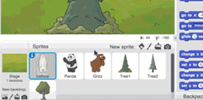
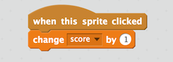
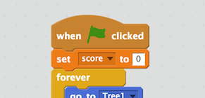
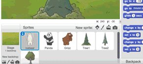
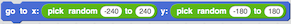

Adicione ao seu jogo
O que mais você quer adicionar ao seu jogo? Tente algumas dessas ideias.
Pontuação
Adicione uma variável para registrar a pontuação.
Primeiro, clique para destacar um urso ou outro ator.

Na categoria Dados, crie uma variável chamada pontuação.

Arraste um bloco altere a pontuação em 1.
Adicione um ponto toda vez que o ator for clicado:

Use definir pontuação como 0 para reiniciar a pontuação no começo do seu programa:

Adicione mais personagens
Adicione mais ursos ou outros atores.
Você pode copiar os scripts do seu urso para o outro ator.
Para copiar, arraste cada script para cima da miniatura do ator. Quando você soltar o mouse, o script será copiado:

Ou, se você estiver conectado, você pode usar a Mochila para copiar scripts.
Pule para um local aleatório
Quer que seus atores andem por toda a tela?
Clique na categoria Movimento. Arraste um bloco vá para x y.
Faça seu ator pular para um local aleatório no palco usando esses blocos:

A posição x (na horizontal) vai de -240 a 240. A posição y (na vertical) vai de -180 a 180.
Dica: você pode usar isso para substituir o blocomova.